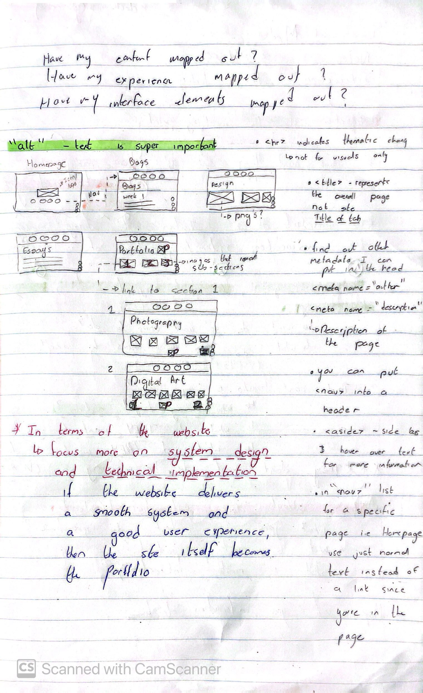
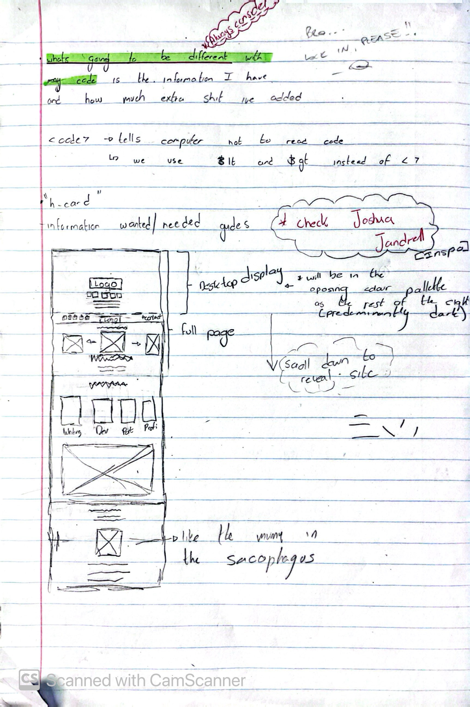
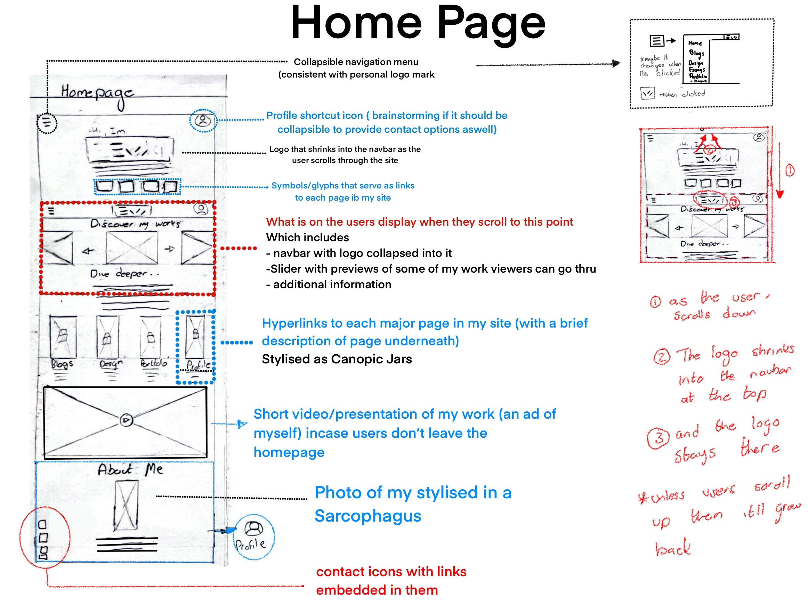
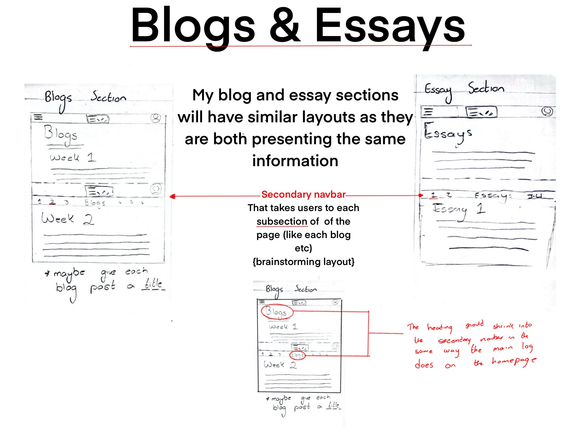

My Primary goal for my Website is to Showcase my Work and Process to have a place to display my academic, creative, and design work in a visually engaging and cohesive manner.
By merging ancient Egyptian motifs with a futuristic sci-fi aesthetic, my goal is to showcase myself as a unique designer whose work stands apart from conventional portfolios. I want to encourage users to discover my content naturally in an organic and cohesive manner that makes navigating through my site as intuitive as possible, to encourage users to stay on my site and continue to browse through, conveying a sense of exploration through my work. I want users to feel as though they are exploring an ancient tomb/pyramid filled with mystique and wonder. Whether the user is looking to employ, collaborate, or simply explore my portfolio, the goal for the site is that it enables them to interact meaningfully with my work and easily get in touch.
Content Mapping
Homepage - A brief Introduction and featured works presented as artifacts awaiting discovery.
Blogs Page – Weekly blogs and reflections of my web development process.
Web Design Page – Showcases the evolution of the website, showcasing my design decisions, processes and experiments as architectural “blueprints”.
Portfolio Page – Showcasing my art, animations, photography etc with the UI displayed like hieroglyphs.
Essays Page – A collection of essays, carved into the digital stone (still brainstorming)
Profile – Contact information, Social media , and a biography with a picture of me , presented/displayed as a Pharaoh in a Sarcophagus
Users
Potential Employers, Collaborators, and Recruiters- People seeking my talent
People with a passion for art and design
General Users- Users intrigued by immersive and unconventional web experiences.
Wireframes
Initial Planning

The wireframes above illustrate the layout of the homepage, blog page, and portfolio page, showcasing the placement of elements and content. The homepage features a slider with a brief overview of my work, followed by links to other pages. The blog page lists entries with a secondary navbar for navigation, while the portfolio page displays projects with a secondary navbar for navigation. These wireframes serve as a blueprint for the site’s structure and content placement, ensuring a cohesive and engaging user experience.

Home page

My main goal for this site is to showcase myself as an artist, and i want that to direct how users engage with my site. The home page consists of links to all the other pages, followed by a slider that allows users to browse through a selection of my works, with a brief overview of myself as an artist (think elevator pitch). Followed by more links to the rest of the site, the reason theres two sections like this is to emphasise and kinda persuade users into looking through my site, with a navbar with a collapsible menu that serves the same purpose
Blogs and Essays

My blog and essay sections will have similar layouts as they are both presenting the same type of information using Secondary navbar for navigation within the page That takes users to each subsection of of the page (like each blog etc)
(brainstorming layout) however i would like for the Design section mto be similar but differ in layout as it is presenting different information
Portfolio
I want my portfolio to showcase my best work and if people are keen to see more want them to be linked to a pdf where I that
serves as an archive of work, including work
that isn't displayed on the site this is because I don't want the site to be overcrowded with too much information, but i would like for it to have sufficient information to eloquently showcase my talents.
Interaction on my website isn’t just about getting from one page to another.It’s about exploring, discovering, and immersing yourself in the experience. Most websites present information in a straightforward, structured way, but I want mine to be something you actively engage with, not just scroll through.
Here, interaction means users aren’t just viewers but participants, uncovering content through hover effects, smooth transitions, ambient sounds, and shifting glyphs. Every movement feels like revealing a hidden artifact or unlocking an ancient secret, tying directly into the theme of a mysterious, futuristic tomb filled with lost knowledge and treasures.
In the broader context of the web, interaction shapes how users experience content. Unlike static sites, mine reacts, whether through sound cues, environmental changes, or fluid navigation, making the journey through my work feel seamless and intuitive. It’s not just about usability but about storytelling, guiding users through my artistic and academic work as if they were on an interactive expedition rather than just browsing a portfolio.
User Flow
Homepage
Brief introduction and website's purpose, with my logo shrinking into tha Navbar like in the Gucci website Gucci , with a collapsable menu in the navbar that features the navigation elements and links to every part of my site
A slider that you can scroll through featuring my latest and best projects/works presented as relics.
A Panel that has an illustration that serves as a link that takes you to the corresponding part of my website
My Profile
Will be featured at the bottom of my homepage and each link to it will just take users straight there, there will also be an option to go to my profilr on the navbar at all times
Portfolio Page
Clickable glyphs that expand like revealing hidden chambers(All the pages comprising of the different work i do}.
Blogs Page
Entries listed as scrolls in a library.
Side navigation as a bookshelf allowing selection of preferred scrolls.
each blog will have a “read more” with more information and a "Unroll Scroll" button.
Essays Page
Essays listed as stone carved inscriptions on a wall.
"Read Inscription" button representing “Read more”.
Web Design Page
Design process detailed as evolving architectural blueprints.
Profile
- Self-portrait styled as an ancient sarcophagus.
Biography and Contact information presented on a carved tablet.
Design Inspiration (Reference Material)
Gucci(UI/UX and layout) inspo - The Gucci Website for me is quite admirable for its UI/UX design. It has transitional effects such as the Gucci Logo shrinking into the navbar as you scroll down the homepage, coupled with a clean layout and presentation of data, using hover effects and straying from an information overload. These elements provide an organed yet polished experience that i wish to achieve with my site.
Hermes(further UI/UX and layout) inspo - The Hemes Website is quite similar to the gucci one, however it features less stylistic elements. However the few they do employ are polished to achieve a sense of luxury and quality as you browse through the site, using some elements present on the gucci site in a more polished manner, or rather, in a manner that would better work with my site.
Joshua’s Portfolio (Navigation, UI, UX, Home) - Out of all past student work this one stood out to me the most. Im inspired by how the Homepage (and some of the others) “evovles” as you scroll through with transitional effects and UI elements that make navigating through Joshuas portfolio feel intuitive, engaging and organic. Which is essentially how id like browsing through my website to feel
Venus project(aesthetic and design elements) The Shipwreck(aesthetic and layout) Minh Pham(aesthetic, UXand layout)Pistola (aesthetic) 200 Allens (Similar to how i want my site to be)
The thematic nature of the above listed websites and how the overall webdesign and elements are shaped around an experience the web designers want to covey, using unique animations, UI elements such as a custom cursor, and just how the information is presented has given me a lot of inspiration in how id like to style my website around the intended experience id like for the user to experience in exploring my work and myself as an artist.
Style Guide (Prototype)
Visual Aesthetic
- A fusion of ancient and futuristic elements, creating a unique and immersive design that draws users into a narrative journey.
Color Scheme
Primary Palette:
Dark, atmospheric tones as the backdrop, deep dark browns, blacks and midnight blues, dark stone colours too.
Secondary Pallette:
Gold and stone like textures and colours for highlights and interactive elements.
Layout
A semi grid structure with content being well-organized and visually balanced in that users will not be overflooded with information but rather guided through, with generous use of space to improve readability and focus.
Interface Elements
Navigation Bar
- A sticky nav bar on each page, styled with hieroglyphic-inspired icons, allows users to easily traverse the site.
Buttons
My Profile button talin users to my profile
Colllapsable menu within Nav bar for more precise navigation
 I want my portfolio to showcase my best work and if people are keen to see more want them to be linked to a pdf where I that
serves as an archive of work, including work
that isn't displayed on the site this is because I don't want the site to be overcrowded with too much information, but i would like for it to have sufficient information to eloquently showcase my talents.
Interaction on my website isn’t just about getting from one page to another.It’s about exploring, discovering, and immersing yourself in the experience. Most websites present information in a straightforward, structured way, but I want mine to be something you actively engage with, not just scroll through.
Here, interaction means users aren’t just viewers but participants, uncovering content through hover effects, smooth transitions, ambient sounds, and shifting glyphs. Every movement feels like revealing a hidden artifact or unlocking an ancient secret, tying directly into the theme of a mysterious, futuristic tomb filled with lost knowledge and treasures.
In the broader context of the web, interaction shapes how users experience content. Unlike static sites, mine reacts, whether through sound cues, environmental changes, or fluid navigation, making the journey through my work feel seamless and intuitive. It’s not just about usability but about storytelling, guiding users through my artistic and academic work as if they were on an interactive expedition rather than just browsing a portfolio.
I want my portfolio to showcase my best work and if people are keen to see more want them to be linked to a pdf where I that
serves as an archive of work, including work
that isn't displayed on the site this is because I don't want the site to be overcrowded with too much information, but i would like for it to have sufficient information to eloquently showcase my talents.
Interaction on my website isn’t just about getting from one page to another.It’s about exploring, discovering, and immersing yourself in the experience. Most websites present information in a straightforward, structured way, but I want mine to be something you actively engage with, not just scroll through.
Here, interaction means users aren’t just viewers but participants, uncovering content through hover effects, smooth transitions, ambient sounds, and shifting glyphs. Every movement feels like revealing a hidden artifact or unlocking an ancient secret, tying directly into the theme of a mysterious, futuristic tomb filled with lost knowledge and treasures.
In the broader context of the web, interaction shapes how users experience content. Unlike static sites, mine reacts, whether through sound cues, environmental changes, or fluid navigation, making the journey through my work feel seamless and intuitive. It’s not just about usability but about storytelling, guiding users through my artistic and academic work as if they were on an interactive expedition rather than just browsing a portfolio.